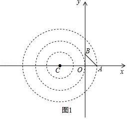
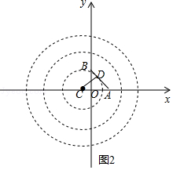
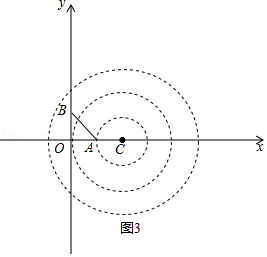
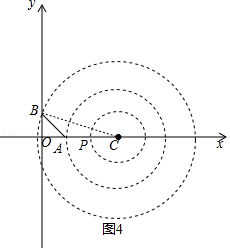

2017年北京市中考数学试题 · 数学解答题 第29题 · 对应解析
29．（8分）（2017•北京）在平面直角坐标系xOy中的点P和图形M，给出如下的定义：若在图形M上存在一点Q，使得P、Q两点间的距离小于或等于1，则称P为图形M的关联点．
（1）当⊙O的半径为2时，
①在点P1（ ，0），P2（ ， ），P3（ ，0）中，⊙O的关联点是 P2，P3 ．
②点P在直线y=﹣x上，若P为⊙O的关联点，求点P的横坐标的取值范围．
（2）⊙C的圆心在x轴上，半径为2，直线y=﹣x+1与x轴、y轴交于点A、B．若线段AB上的所有点都是⊙C的关联点，直接写出圆心C的横坐标的取值范围．
【考点】FI：一次函数综合题．菁优网版权所有
【分析】（1）①根据点P1（ ，0），P2（ ， ），P3（ ，0），求得P1= ，P2=1，OP3= ，于是得到结论；②根据定义分析，可得当最小y=﹣x上的点P到原点的距离在1到3之间时符合题意，设P（x，﹣x），根据两点间的距离公式得到即可得到结论；
（2根据已知条件得到A（1，0），B（0，1），如图1，当圆过点A时，得到C（﹣2，0），如图2，当直线AB与小圆相切时，切点为D，得到C（1﹣ ，0），于是得到结论；如图3，当圆过点A，则AC=1，得到C（2，0），如图4，当圆过点B，连接BC，根据勾股定理得到C（2 ，0），于是得到结论．
【解答】解：（1）①∵点P1（ ，0），P2（ ， ），P3（ ，0），
∴OP1= ，OP2=1，OP3= ，
∴P1与⊙O的最小距离为 ，P2与⊙O的最小距离为1，OP3与⊙O的最小距离为 ，
∴⊙O，⊙O的关联点是P2，P3；
故答案为：P2，P3；
②根据定义分析，可得当最小y=﹣x上的点P到原点的距离在1到3之间时符合题意，
∴设P（x，﹣x），当OP=1时，
由距离公式得，OP= =1，
∴x= ，
当OP=3时，OP= =3，
解得：x=± ；
∴点P的横坐标的取值范围为：﹣ ≤≤﹣ ，或 ≤x≤ ；
（2）∵直线y=﹣x+1与x轴、y轴交于点A、B，
∴A（1，0），B（0，1），
如图1，

当圆过点A时，此时，CA=3，
∴C（﹣2，0），
如图2，

当直线AB与小圆相切时，切点为D，
∴CD=1，
∵直线AB的解析式为y=﹣x+1，
∴直线AB与x轴的夹角=45°，
∴AC= ，
∴C（1﹣ ，0），
∴圆心C的横坐标的取值范围为：﹣2≤xC≤1﹣ ；
如图3，

当圆过点A，则AC=1，∴C（2，0），
如图4，

当圆过点B，连接BC，此时，BC=3，
∴OC= =2 ，
∴C（2 ，0）．
∴圆心C的横坐标的取值范围为：2≤xC≤2 ；
综上所述；圆心C的横坐标的取值范围为：﹣2≤xC≤1﹣ 或2≤xC≤2 ．
【点评】本题考查了一次函数的性质，勾股定理，直线与圆的位置关系，两点间的距离公式，正确的作出图形是解题的关键．